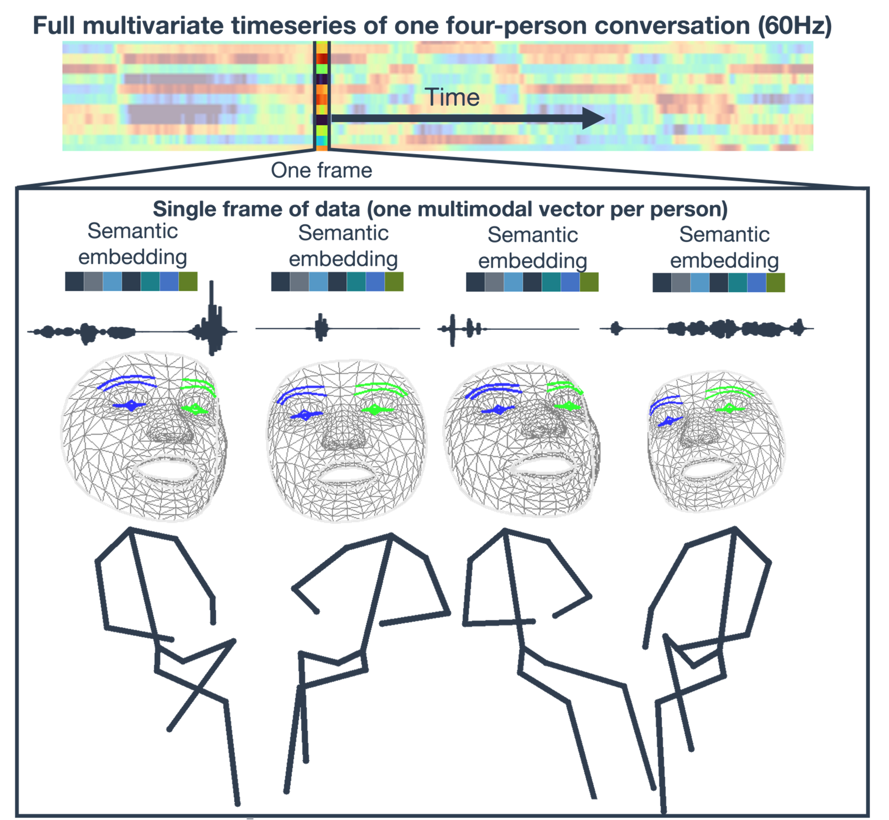
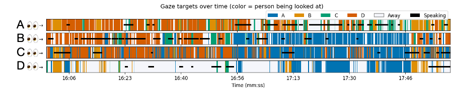

Research Overview
The Science of Participation

"Dancing Figures" by Keith Haring, 1987
Approach

Visualization of extracted social features from a group conversation
3D facial motion captured using MediaPipe

Time series of gaze behavior extracted from group conversation
I record naturalistic social interactions--primarily group conversations--using cameras and microphones. From these recordings, I extract dynamic, observable social signals using pre-trained deep neural networks (DNNs) to featurize the interactions into multivariate time series data. From these data, I'm using further downstream DNNs and information-theoretic tools to understand how and when social information is distributed across these social systems.
Current Projects
Identifying collective social states in free-flowing group conversations